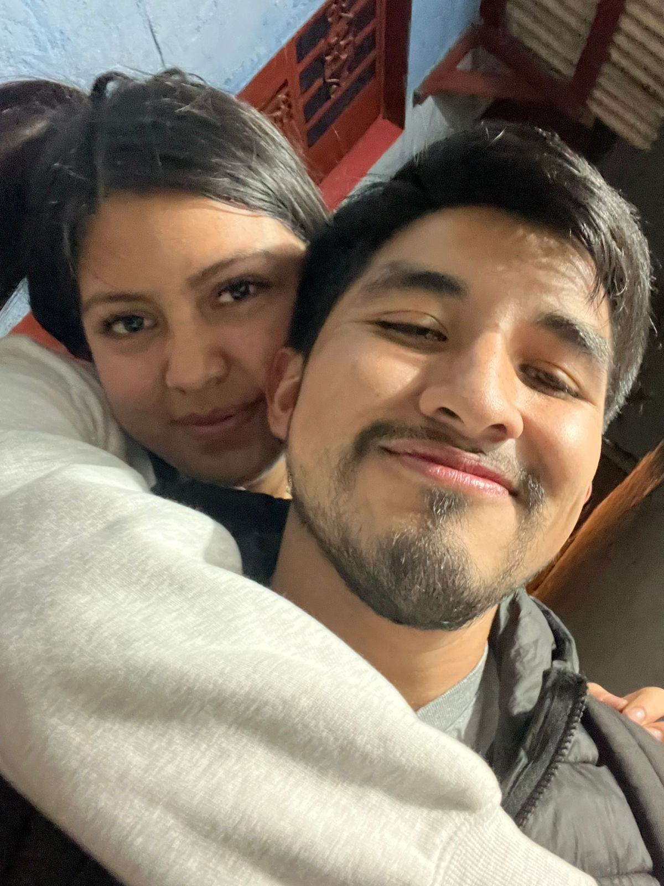
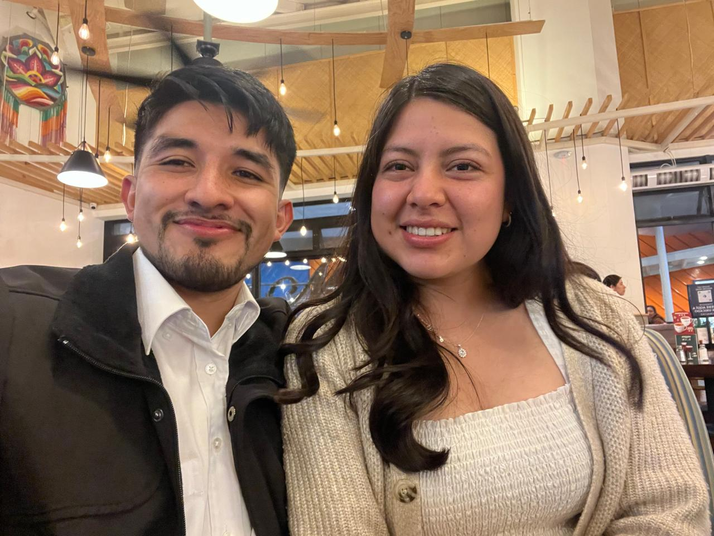
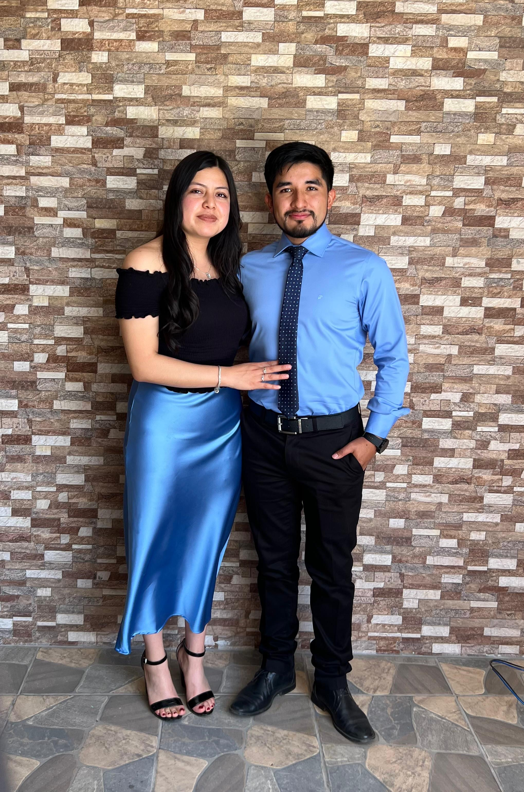

Lo bueno
Gracias por lo vivido
Porque hubo amor, ilusión, planes, compañía y momentos que dejaron huella.
Este espacio no busca cambiar nada. Solo despedirme bien, con respeto, con verdad y con el cariño que siempre tendrá lo que vivimos.

Porque hubo amor, ilusión, planes, compañía y momentos que dejaron huella.
Este mensaje no lo escribo desde el enojo, sino desde querer cerrar con bien nuestro capítulo.
Que el amor que existió (existe) no se convierta en una herida, sino en un buen recuerdo.

Y aunque no te guste la foto, estas fueron las primeras platicas fuera de tu casa, esas graditas, ese espacio tan nuestro.

A pesar de todo lo vivido, cumplimos un año juntos y para mí fue el mejor año, disfrutando de nuestro amor día con día.

Nuestra mejor combinación, el mejor outfit y que recuerda las tantas veces que sin querer terminamos combinando.
Es increíble como recuerdo la vez que me dijiste que NO para posteriormente decirme que SÍ, el momento que terminé siendo muy feliz.
Lo tanto que planeamos una vida juntos, esa casita, ese lugar que queríamos para nosotros.
Aunque hoy ese camino ya no sea el nuestro, no por eso deja de haber sido valioso.
Jenifer, que extraño es decirte por tu nombre, escribo esto no para cambiar tu decisión, ni para detener lo que ya entendimos que debía pasar. Lo escribo porque fuiste una parte muy importante de mi vida, y no quería que algo tan bonito terminara sin decirte algo bonito, con confusión o palabras sin sentimiento.
Gracias por cada momento bonito, por cada conversación, por cada ilusión y por todo lo que construimos desde el corazón. Hubo cosas que soñamos de verdad, cosas que imaginamos como un futuro, y una vida juntos, me duele que no tendré a mi hija de blanquita de ojos bonitos. Blanquita como su mamá y las pestañas de su papá, como tantas veces lo dijimos.
Me quedo con lo bueno. Con lo sincero. Con lo que sí fue amor, cuidado, apoyo, compañía y esperanza. También acepto que hubo dolor, desgaste y circunstancias que nos terminaron afectando más de lo que queríamos. Esto no es para culpar a nadie, sino para despedirme bien.
Deseo de corazón que encuentres paz, descanso, estabilidad y alegría. Deseo que la vida te de todo lo bonito y que todo lo que venga para ti te haga bien. Y si algún día piensas en mí, o en nosotros, ojalá sea desde la ternura y no desde la colera o enojo.
Quiero recordarte que mi promesa de estar para ti sigue presente, llegarán personas a tu vida, conoceras a alguien que te de paz y es mi mejor deseo para ti, perdoname por haberte fallado, solamente quiero recordarte que mi amor por ti no es algo que se borré tan fácilmente, hasta pronto, si Dios lo permite nos volveremos a cruzar y sino, que tengas una vida llena de bendiciones y éxitos.
Gracias por haber existido en mi historia. Siempre voy a guardar este capítulo con cariño y mucho amor.
Antes de cerrar esta historia, quiero decir una cosa más.
Gracias por todo lo que fuimos, por lo que construimos y por lo que soñamos juntos.
Te amo tanto y te amaré.
Gracias por todo, Jenifer.
Te dejo ir con amor.